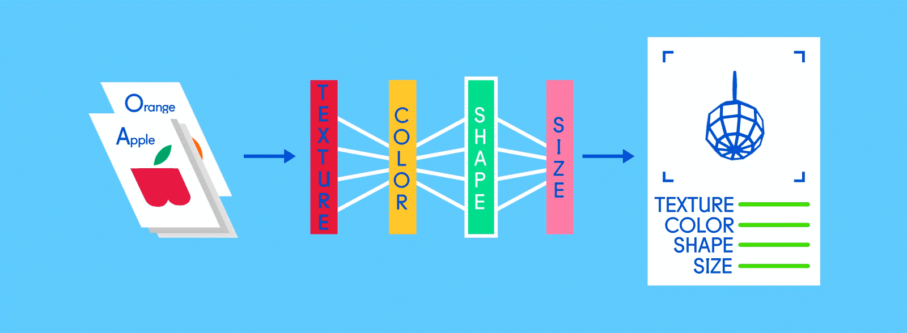

多层感知机（MLP）简介
我们可以把MLP想象成一个智能的大脑，它能够学习和识别不同类型的水果。
当我们给MLP展示一张水果的图片，比如一个苹果。
MLP的第一层就会像人脑一样发现图片里的水果是一个平滑的红色圆球
平滑、红色、圆球就是MLP第一层输入的特征， 在计算机中可能表示为[0.9,#FF0000,0]
第二层这个智能大脑就会根据以往判断的准确率来修改每项特征的权重
可能它会认为这个水果是否平滑对它的结果并不重要，这一切取决与智能大脑自己的判断
最后，MLP的第三层就是输出层，它会告诉我们最终的分类结果
